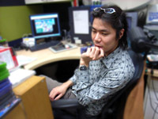

「クリエイターズ インタビュー」 第2回目は、
『ソニックライダーズ』でディレクター兼メインゲームデザインを担当した森本 兼次郎を紹介！
プロフィール：
森本 兼次郎（もりもと けんじろう）
セガ/第一ＧＥ研究開発部/プランニングセクション
参加作品『ソニックアドベンチャー』シリーズ、『PSO』シリーズ
『ソニックライダーズ』ではディレクター兼メインゲームデザインを担当。
まず、セガに入ったきっかけ、動機などを教えていただけますでしょうか？
「“モノ”を創り、人を感動させる仕事」
何かできるというわけではなかったんだけど、
所謂開発という職種への単純な憧れでそういった仕事を探していて
その中の1つがゲーム作りだったわけですよ。
で、何でセガなのかというとこれまた単純な理由で、
丁度『ファンタジーゾーン』や『スペースハリアー』、
『アウトラン』がゲームセンターを賑わせていた時代を過ごしてきて、
勿論マーク3やメガドライブも持っていたわけで、
中高生の頃にはゲーム＝セガみたいなイメージが確立していたので。
ゲーム業界の中で他の有名他社も受けましたが、
あえてセガを選んだ一番の理由はセガに対する憧れというやつですね。
セガに入って、どのようなことをやりたいと思っていましたか？
正直ゲーム作りに関して全く知識が無かったので、 「何がやりたい」なんて明確なプランは何も持っていませんでした。 むしろ「俺、何ができるの？」とそれが一番知りたかったですね。 ただ、モノを創る上で何かしら自己表現がしたいと考えていて、 ゲームというメディアを使ったの自己表現の方法に制限は無いと考えていました。 それがシステム的な側面にせよシナリオ的な側面にせよ実現は可能だとすごく楽観的に捉えていたわけですが 今考えると、セガはよくこんなポジティブな思考を持つ人間を雇ってくれたと思います。
学生時代は、どのようなことに力を入れていましたか？
いやー、恥ずかしいことに人様に自慢できることは何一つしてないですね(笑)。
高校時代は女の子にもてたい一心で仲間とバンド活動（ギター担当）をしていました。
金はないけど暇はたっぷりあったから、すごい練習してそこそこ上手くなって、
しまいには「自分はミュージシャンになるんだ！」なんていう根拠の無い将来像を見出していました。
おかげ様で受験勉強も何もしていないから、普通に予備校に進学しました。
ジェット様に「ぬるいぜ！」って怒られますね(笑)！
仕事以外の趣味も聞いていいですか？
これまた趣味と呼べるほどの趣味は何一つ無いのですが、
あえて言うなら“お酒”ですかね。
別にワイン通とかそんな自慢できるものではなく
お酒を五感で味わえる環境に浸るのが好きです。
京都の清水寺の道中に、
座敷（高台）から京都市内を一望できる茶屋があって
冬そこで飲む熱燗は何ともいえない贅沢を感じますね。
あと漫画が好きですね。
酒を飲みながら漫画を読んでいると時間を忘れます。
最近わくわくした漫画は「GANTZ」です。最高です！
目頭が熱くなり膝が震えます！